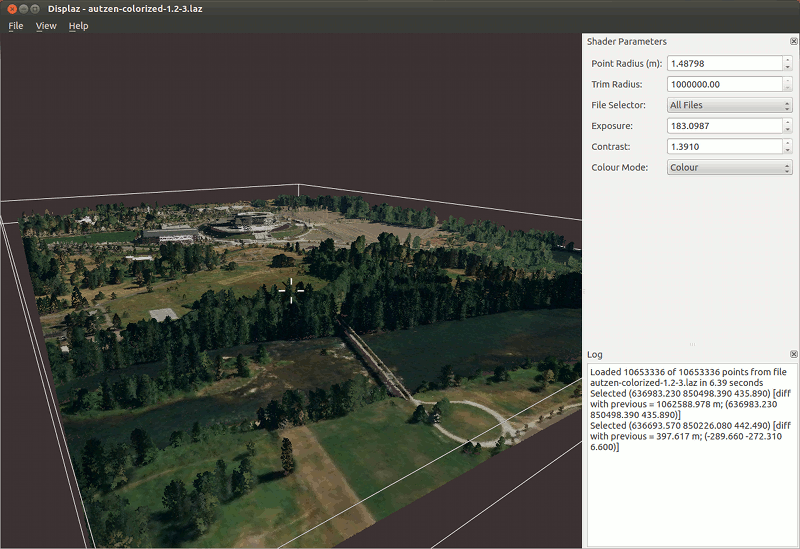

A las viewer for geospatial point clouds
This project is maintained by c42f
displaz is a cross platform viewer for displaying lidar point clouds and derived artifacts such as fitted meshes. The interface was originally developed for viewing large airborne laser scans, but also works quite well for point clouds acquired using terrestrial lidar and other sources such as bathymetric sonar.
The goal is to provide a flexible and programmable technical tool for exploring large lidar point data sets and derived geometry.
Here's a screenshot showing Autzen stadium in colour. This scene contains a relatively small number of points (10,000,000) and is nicely interactive.
Use File->Open to open a las file. Note that displaz may appear unresponsive when loading very large files - just wait for it and it should eventually finish.
To change how the points are displayed, use the controls in the box on the right hand side of the screen. Examples:
Additional point display controls may be added and configured at runtime via hints in the the shader program. While in the shader editor (accessible via the view menu), pressing Shift+Return will cause a valid shader to be recompiled and applied to the point cloud immediately.
The primary file format is the ASPRS .las format; compressed .laz is also supported. Internally these formats are read using the laszip library (via LASlib) so any standards-conforming las file should be read correctly.
Very basic plain text import is also supported: Each line of a .txt file will be
interpreted as X Y Z ... where the trailing part of the line is
ignored.
Basic support for vector geometry (meshes and line segments) is available via the .ply file format. Any .ply file containing a header of the form
element vertex <N>
property float x
property float y
property float z
element face <M>
property list uchar int vertex_index
will be recognised and rendered as a mesh with solid faces. When the face element is replaced with an edge element in the same format, each edge will be rendered as a set of linear segments.
displaz is intended to be cross-platform, and runs on both windows and linux. It should also work on OSX with minimal effort, but the author doesn't have access to an OSX system for testing.
displaz uses modern OpenGL features, so requires a reasonably up to date graphic driver. It is known to work well with recent Nvidia and ATI drivers. Some problems have been reported with older ATI and Intel drivers - these will be fixed in the future where possible.
The author gratefully acknowledges Fugro Roames for supporting displaz with development time and access to raw lidar data.